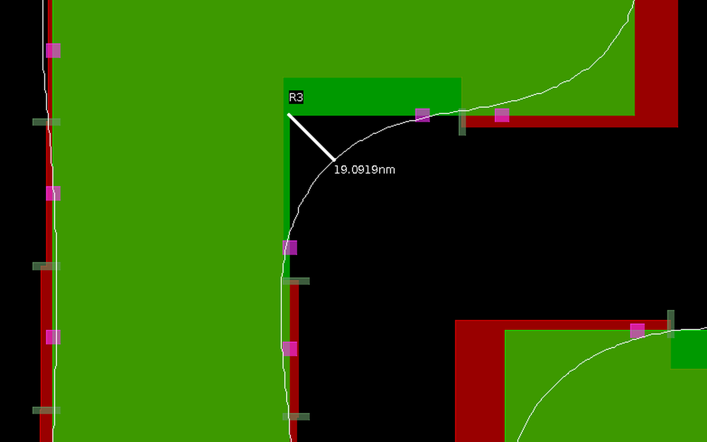

빛의 회절 때문에 마스크 패턴을 그대로 인쇄하면 모서리가 둥글어지고 선폭이 줄어드는 왜곡이 생깁니다. OPC는 이를 미리 보정하는 기술인데, Recipe 파라미터에 따라 보정 결과가 달라집니다.
어떤 파라미터가 어떤 품질 지표를 바꾸는지 직접 확인하는 것이 과제의 목표였습니다.
6인 팀의 일원으로 default / split 두 가지 recipe를 설정해 OPC를 수행하고, Contour simulation 결과를 비교하는 실습에 참여했습니다.
Feature Classification: Min_feature 65nm → 50nm
Dissection: nominal_seg_len 50 → 40, num_run_segs 5 → 6 등으로 Edge를 더 세밀하게 분할
Retargeting: vert_control 1.0 → 0.8로 Corner 부근 과보정 방지
Hierman으로 Template 생성 후 Corexec으로 Recipe를 적용해 OPC 수행, Contour simulation 후 CD 측정
파라미터마다 영향을 주는 영역이 달라, 변경 항목별로 예상 결과를 먼저 세운 뒤 실제 측정값과 대조했습니다.
두 recipe의 Contour를 같은 위치에서 측정해 Segment 세분화 → Corner·Edge 보정 정밀도 향상이라는 가설을 확인했습니다.
Split recipe 적용으로 Corner Rounding 24.39nm → 19.1nm, Mask–Contour CD 차이 5nm → 3.5nm, Contour narrowing 1.5nm → 1nm로 개선됐고 Line Edge Roughness도 감소했습니다.